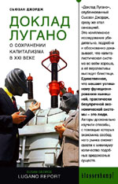

Сьюзан Джордж • Доклад Лугано • Перевод: Дар Жутаев • klassenkampf • 01.08.2005

“Доклад Лугано”, опубликованный Сьюзан Джордж, сразу же стал сенсацией. Это комплексное исследование убедительно, подробно и обоснованно доказывает, что капиталистическая система во всём хороша, а её перспективы выглядят блестяще. Единственное, что мешает успешному функционированию нынешней, практически безупречной экономической системы – это люди. Авторы досконально изучили способы, с помощью которых экономика свободного рынка сможет свести к минимуму количество подобных вредоносных существ.
Первая книга издательства в серии klassenkampf, посвященной современной левой политической мысли, составителями которой стали Борис Кагарлицкий и Александр Тарасов.
Пресса
Лев Рамштейн. Доклад Лугано (Глобальная альтернатива, 24.10.2005)
Доклад некой Рабочей Группы о сохранении капитализма исполнен в стиле знаменитейших провокаций прошлого века – Протоколов сионских мудрецов и письма Зиновьева английским коммунистам. Конечно, товарищ Сьюзен Джордж не ставила перед собой цели устроить глобальную провокацию, как в случае этих подметных бумаг. Но посмотреть на современную капиталистическую систему глазами её защитников ей удалось. Самое комичное, что в нашей рубрике уже рецензировалась книженция Джагшида Бхагвати «В защиту глобализации», ряд положений которой абсолютно идентичны «Докладу Лугано». Но Бхагвати в отличие от Сьюзен Джордж вернейший адепт капиталистического пути. Как пишет автор в послесловии: «Цель этой книги – причинить беспокойство успокоенным, но, увы, не принести существенное утешение обеспокоенным». Это совсем не так. Точное изложение реальной стратегии и тактики «врага рода человеческого» – капитализма, весьма «существенное утешение».
Начинаем цитировать. «…капитализм – это не просто экономическая доктрина и достижение человеческого разума, но ещё и революционная, эсхатологическая сила,, ещё и источник надежды – точно так же, как и коммунизм когда-то». То есть капитализм такая же религия, контролирующая не только карманы, но и души паствы, как церковь Муна или «Чучхе». А для религий характерно отказывать в праве на существование людям, находящимся вне сферы «истинной веры». То есть «Единственное, что мешает успешному функционированию нынешней практически безупречной экономической системы, – это люди». О том, как этих лишних людей нейтрализовать и написан «Доклад Лугано». «Торговые центры и пассажи суть истинные соборы нашего времени и число претендующих быть их прихожанами растёт с каждым днём. Но не все души могут объединится в этом вероисповедании потребителей. Отверженные это не только иностранцы, но и местные безработные, работающие бедняки на низкооплачиваемых, тупиковых работах, маргинализированная молодёжь или старики. Одним словом неудачники. Непричастные. Невозможность причаститься этой культуры имеет результатом постоянную фрустрацию, которая рано или поздно найдёт своё выражение лишь в гневе, направленном вовнутрь или наружу. Те, кто не может быть интегрирован, ищут утешения – а часто и отмщения – в различных болезненно обостренных и патологических формах местного патриотизма, национализма, фундаментализма и в создание групп бдительности», чья ненависть направлена на мейнстрим политической культуры».
А вот рецепт, которому буквально следует родная кремлёвская администрация. Хотя книга написана в 1999 году, наши «слуги народа» прочитали её гораздо раньше. «Согласно данным, приведенным страховыми компаниями США, кражи автомобилей нанесли в 1995 году ущерб в 8 миллиардов долларов; в том же самом году владельцы автомобилей установили на своих машинах противоугонных устройств на сумму 675 миллионов долларов. Однако было бы довольно близоруко восклицать: «Но это хорошо, ведь производство автомобильного оборудования расширяется!» Подобная экономическая деятельность, тем не менее, учитывается как «рост» при расчёте валового национального продукта (ВНП)* – так же как и лечение от рака, строительство тюрем, центры реабилитации наркоманов, ремонтные работы, вызванные терактами и т.д. Вероятно, самый оптимальный путь резко увеличить ВНП – это развязать войну». Хочется добавить – маленькую победоносную гражданскую войну.
*Термин-близнец ВВП
http://www.aglob.ru/books/?id=153
Американка презентует секретные материалы в Екатеринбурге (JustMedia, 29.10.2005)
10 ноября в помещении Уральского государственного университета (Екатеринбург) состоится встреча с общественностью г-жи Сьюзан Джордж и презентация ее новой книги «Доклад Лугано», вышедшей в издательстве «Ультра.Культура»
Сьюзан Джордж – американский экономист и французский политический активист. Ее имя принято ассоциировать с массовыми альтерглобалистскими выступлениями и резкой критикой в адрес американцев. Именно она выступила одним из инициаторов и лидеров компанию «NON» во Франции против проекта Европейской Конституции.
Сьюзан Джордж выступила одним из инициаторов Всемирного Социального Форума, возглавила во Франции организацию АТТАК («антиглобалистскую коалицию, добивающуюся введения международного налога на финансовые спекуляции). Она является одним из ведущих идеологов международного движения против Всемирной Торговой Организации, насаждающей единый экономический порядок.
Сьюзан Джордж – автор более дюжины книг, ставших «настольными» для нескольких поколений левых политиков, философов и активистов. Ее книги переведены на десять языков мира. Среди них «Другой мир возможен», «The Debt Bumerang», «A Fate Worse than Debt».
Книга Сьюзан Джордж «Доклад Лугано» – первая из ее произведений, переведенная на русский язык и вышедшая из печати в издательстве «Ультра.Культура». Она представляет собой пародию на документы международных финансовых и торговых институтов, в котором подробно и обоснованно доказывает, что капиталистическая система во всём хороша, а её перспективы выглядят блестяще. Единственное, что мешает успешному функционированию нынешней, практически безупречной экономической системы – это люди. Анонимные авторы доклада затем увлеченно обсуждают способы, с помощью которых экономика свободного рынка сводит к минимуму количество подобных вредоносных существ.
https://web.archive.org/web/20051215213939/http://www.justmedia.ru:80/analitic/?id=6266
Доклад Лугано, или Секретные материалы нового мирового порядка (12.11.2005)
С 9 по 14 ноября в России по приглашению Института Проблем Глобализации и издательства «Ультра.Культура» находится Сьюзан Джордж — один из инициаторов Всемирного социального форума, экономист, идеолог «антиглобалистской» левой, один из лидеров движения против Европейской Конституции, выигравшего недавний референдум во Франции. Она представляет свою новую книгу «Доклад Лугано», которая стала первой из ее произведений, переведенной на русский язык «Ультра.Культурой». Книга представляет собой пародию на документы международных финансовых и торговых институтов. Так, анонимные авторы одного доклада подробно и обоснованно доказывают, что капиталистическая система во всём хороша, а её перспективы выглядят блестяще. Единственное, что мешает ее успешному функционированию — это люди. И увлеченно обсуждают способы, с помощью которых экономика свободного рынка может свести к минимуму количество подобных вредоносных существ. Вечером 9 ноября Сьюзан Джордж посетила магазин «Фаланстер» и провела там встречу с читателями.
Сьюзан Джордж можно назвать и американским экономистом, и французским политическим и общественным активистом. А вообще, эта женщина известна всему миру. Ее имя ассоциируется не только с массовыми альтерглобалистскими выступлениями, в т.ч. и историческим массовым выступлением в Сиэтле в 1999 г. Сьюзан Джордж стала одним из вдохновителей и лидеров компании «NON» во Франции — против проекта Европейской Конституции, нанеся серьезный удар по неолиберальным планам брюссельской «еврократии».
Для западных левых Сьюзан Джордж давно стала своего рода моральным лидером, идеологическим авторитетом, с которым можно не соглашаться, но не считаться невозможно. Многие считают её слишком умеренной, но никто не может отрицать того, что на крутых поворотах в развитии движения она неизменно оказывалась в рядах тех, кто выбирал борьбу.
Она выступила одним из инициаторов Всемирного социального форума, возглавила во Франции организацию АТТАК (“антиглобалистскую коалицию”, добивающуюся введения международного налога на финансовые спекуляции). Она является одним из ведущих идеологов международного движения против Всемирной торговой организации, насаждающей единый экономический порядок.
Сьюзан Джордж — автор более дюжины книг, ставших «настольными» для нескольких поколений левых политиков, философов и активистов. Они переведены на десять языков мира. Среди них «Другой мир возможен», «The Debt Bumerang», «A Fate Worse than Debt».
График публичных мероприятий Сьюзан Джордж в России:
12 ноября, Суббота — открытая встреча со Сьюзан Джордж в Доме Плеханова «Глобализация, современная Европа и Россия»
Город: Санкт-Петербург
Время: 12.00 — 13.30
Место: Дом Плеханова, 4-я Красноармейская ул., д. 1/33
14 ноября, Понедельник — публичная встреча с г-жой Сьюзан Джордж в Независимом пресс-центре
Город: Москва
Время: 12.00–13.00
Место: Независимый пресс-центр, Тверской бульвар, д. 20
В пресс-конференции могут принять участие все левые активисты и журналисты, кому интересна деятельность и взгляды Сьюзан Джордж.
Служба по связям с общественностью ИПРОГа
«Доклад Лугано» в Екатеринбурге (18.11.2005)
Издательство «Ультра. Культура» привезло в Екатеринбург одного из культовых у западной антиглобалистской молодежи авторов. Президент парижского Центра по наблюдению за процессами глобализации Сьюзан Джордж под видом доклада чиновников Евросоюза (целиком книга называется «Доклад Лугано. О сохранении капитализма в XXI веке») создала мистификацию, которую критики ставят в один ряд с такими провокациями как «Протоколы сионских мудрецов» или письмами Зиновьева английским коммунистам. «Доклад Лугано», в отличие от сакраментальных опусов, не пытается стать реальностью – это явственная fiction. Сама Сьюзан Джордж определяет жанр книги как factable fiction – «фактическая фантастика». Книга – весьма удачная стилизация под язык докладов чиновников Евросоюза, ВТО и прочих «монстров глобализации». А обсуждают они не много ни мало проблему лишних нескольких сотен миллионов людей в мире.
«При шести миллиардах населения Земли система стала трудно управляемой. При восьми миллиардах мы можем потерять над ней контроль», – говорит госпожа Джордж словами вымышленных чиновников. Языком железной чиновничьей логики в «Докладе Лугано» доказывается, что капитализм можно сохранить только избавившись от примерно 25 процентов населения земного шара, которые не участвуют в капиталистической жизни. Картинка получилась весьма убедительной и угрожающей – немудрено, что многие читатели на Западе восприняли книгу всерьез. Теория мирового заговора популярна среди неискушенной публики, и госпоже Джордж пришлось второе издание снабдить успокаивающим предисловием: мол, все это фикшн и ложь. Российские издатели из «Ультра. Культура» коварно использовали первоначальный вариант книги, уповая на то, что российскому читателю не страшны западные чиновники.
Автор книги «Доклад Лугано» Сьюзан Джордж считает, что главной проблемой на пути к мировой победе капитализма являются люди. «В каждой стране есть люди ненужные системе. Так, и жители побережья мексиканского залива были не нужны системе, и их смыло ураганом «Катрина». В России тоже есть много ненужных людей», – говорит Сьюзан. Российский коллега г-жи Джордж директор института проблем глобализации, куратор книжной серии издательства «Ультра. Культура» Борис Кагарлицкий присоединился к ее провокации: «Многие в России считают, что наши бедствия – это наши национальные особенности. Что, разумеется, полная нелепость: все, что происходит в России, банально и свойственно всему миру. Будь то жульническая приватизация или монетизация льгот, которая была лишь одним из пунктов на пути перестройки российской экономической систему к вступлению в ВТО. И у нас тоже есть или может быть своя Катрина».
Антиглобалисты привезли в Екатеринбург новую книгу об ужасах капитализма (Новый регион, 20.11.2005)
В Екатеринбург привезли новую книгу о глобализации. Столица Урала оказалась первым российским городом, увидевшим новое произведение “Доклад Лугано” президента парижского Центра по наблюдению за процессами глобализации Сьюзан Джордж ван Кинн. Сейчас… Екатеринбург, Ноябрь 10 (Новый Регион, Маргарита Казимова) – В Екатеринбург привезли новую книгу о глобализации. Столица Урала оказалась первым российским городом, увидевшим новое произведение «Доклад Лугано» президента парижского Центра по наблюдению за процессами глобализации Сьюзан Джордж ван Кинн. Сейчас издательство «Ультра-культура» взялось за выпуск новой серии книг «Классен Камф» – о революции и глобализации, «Доклад Лугано», рассказывающий о способах сохранения единой капиталистической системы – первый в серии.
«Капиталистическая система – это огромный безжалостный механизм, для поддержания которого необходимо определенное количество людей. Тех, кто оказался лишним, она просто уничтожает. Я попыталась об этом рассказать», – утверждает автор уже получившего скандальную известность «Доклада Лугано» Сьюзан Джордж ван Кинн. По ее словам, события в романе хоть и выдуманные, но очень схожи с настоящими. Ураган Катрина писательница рассматривает как способ разделаться с лишними человеческими массами: о возможности катастрофы было известно задолго до нее. Если бы власти хотели, они не допустили бы человеческих жертв.
По мнению директора Института проблем глобализации Бориса Кагарлицкого, на Урале, как и по всей России, появляется все больше людей, интересующихся «левой» литературой: «Люди только сейчас начали понимать, что Россия – не единственная страна с проблемами в экономической, социальной сфере. Меня всегда удивляло русское выражение о российских проблемах: «Это может быть только у нас», тогда как подобные вещи происходят во всем мире. Дело зачастую не в уникальном российском менталитете. Та же монетизация льгот проходила во многих европейских странах. Россия проводит это сейчас, чтобы вступить в ВТО. Нужды граждан учитываются в последнюю очередь. Эти проблемы мы сами должны решать всем миром. Как в русском, так и в глобалистском смысле слова».
Издатели намерены пустить «левую» литературу прежде всего в регионы. Москва и Петербург слишком пресыщены, а в областях достаточно людей, которые способны понять и вступить в левое движение, утверждает Борис Кагарлицкий, по совместительству один из издателей книги. По его словам, новая литература должна способствовать созданию новой «левой» волны.
По словам издателей, за рубежом антиглобалистский роман вызвал бурю эмоций, в большинстве случаев – обвинений и недовольств. В Европе далеко не все читатели поняли, что описанные в книге жесткости – не выдумка. По словам Бориса Кагарлицкого, у российских читателей произведение подобного шока вызвать не должно: мы слишком привыкли к желтой прессе и фильмам Тарантино, чтобы воспринять книгу как реальный документ.
Трактат о пользе геноцида (Немцев Михаил, 17.03.2006)
“Доклад Лугано” был подготовлен по заказу Мирового правительства группой анонимных (хорошо законспирированных) экспертов, собравшихся в курортном городке Лугано, чтобы изучить перспективы мировой капиталистической системы в наступающем веке “глобализации”.
Первая часть доклада была посвящена изложению существующего глобального положения дел, тому, какие факторы и условия определяют развитие “самой справедливой” основанной на свободном рынке капиталистической системы в современных условиях. Вторая – “диагнозу”: что можно и нужно сделать. В третьей предложены радикальные “коррекционные и превентивные” глобальные стратегические меры.
“Доклад Лугано” был подготовлен по заказу Мирового правительства группой анонимных (хорошо законспирированных) экспертов, собравшихся в курортном городке Лугано, чтобы изучить перспективы мировой капиталистической системы в наступающем веке “глобализации”.
Первая часть доклада была посвящена изложению существующего глобального положения дел, тому, какие факторы и условия определяют развитие “самой справедливой” основанной на свободном рынке капиталистической системы в современных условиях. Вторая – “диагнозу”: что можно и нужно сделать. В третьей предложены радикальные “коррекционные и превентивные” глобальные стратегические меры.
Есть мнение (и авторы доклада полностью с ним согласны), что поскольку ресурсы планеты “не беспредельны”, а население непрерывно возрастает, уже очень скоро истощение ресурсов станет решающим фактором мировой политики. Один из возможных ответов на вопрос “что же делать” очевиден: надо сделать так, чтобы население планеты не росло, а еще лучше – чтобы оно сократилось. Высокоученые авторы доклада выводят формулу: “Воздействие (на планету) = Потребление x Технология x Население”. Эта формула критически зависит от фактора “Население”. Лишнее на планете население – это, разумеется, население бедных стран. Авторы доклада пекутся о сохранении желаемого образа жизни и достигнутого уровня потребления богатых людей. Тех, кто победил в условиях самого свободного общественного строя – свободно конкурентного капитализма. Те, кто “проиграл”, должны быть устранены – и во второй части книги методы этого устранения расписаны подробно, со знанием дела, я бы сказал, со смаком. Речь идет о необъявленной войне “верхушки человечества” против всего остального человечества, и эта военная тональность подчеркивается аббревиатурами, к которым охотно прибегают авторы доклада. Они обсуждают “ССН” – стратегии сокращения населения и “РИ” – репродуктивные ингибиторы (т. е. способы сокращения рождаемости).
Каждый год население планеты прирастает минимум на 81 млн. Какая же планета это выдержит? “Чтобы в 2020 году достигнуть контрольной цифры 4 миллиарда (населения планеты), мировое население нужно будет сокращать в среднем на 100 миллионов человек в год в течение двух десятилетий. Девять десятых или больше этого сокращения должны будут происходить в менее развитых странах”. Этой глобальной цели должна быть посвящена вся международная политика. Любые действия богатых стран должны быть переосмыслены как один из методов реализации ССН. “Гуманитарная помощь”, мировотворческие военные действия, пропаганда контрацепции – эти и подобные мероприятия становятся, прежде всего, средствами сокращения населения. Никаких сантиментов: только рациональный расчет и ловкая имитация заботы о людях. ССН делятся на эффективные и неэффективные. Разнообразные ССН, стихийно возникавшие в прежние времена (войны, переселения, искусственно создаваемый голод, концлагеря) были малоэффективны, поскольку их человеконенавистническая природа была очевидна для всех. Современные ССН должны быть эффективны, незаметны и очень гуманны: у всех должна сохранятся уверенность в искренней заботе об их здоровье и безопасности.
Скажем, умирающий от СПИДа африканец должен понимать, что это он сам виноват в том, что он не может заплатить за лечение, а чудовищная стоимость лечения обусловлена стремлением предоставить ему самые качественные и современные услуги. Это же касается и жертв какой-нибудь “антитеррористичсекой акции” международного сообщества: если речь идет о предотвращении терроризма, то безнравственно сожалеть о тех, кому пришлось при этом погибнуть, ведь (будто бы) предотвращено куда большее зло!
Автор этого чудо-текста, специалист по экономике “третьего мира” Сьюзан Джордж, не всегда до предела реализует потенциал цинизма, заложенный в таком подходе к “глобальному управлению”. Но она совершенно последовательно сохраняет наукообразность и строгую логичность, излагая параноидальные рассуждения “авторов” доклада, по возможности снабжая их ссылками на солидные статистические исследования, и приходит к тем чудовищным выводам, к которым приходит.
Вернемся к базовой формуле доклада Лугано. Я полагаю, что наиболее важной в ней является вторая переменная – “Технологии”. Развитие технологий дает людям земли шанс выжить в любом количестве. “Создать изобилие в тесном мире… в этом и состоит культура”, – писал Иосиф Бродский. Технологиям автор не уделяет особого внимания, и понятно, почему: вполне очевидно, что даже те технологии, которые уже сейчас есть у землян, используются ими, мягко говоря, не в общих интересах. Богатые богатеют, бедные беднеют; а авторы доклада уже всерьез ставят вопрос об их истреблении и совершенно искренне аргументируют жизненную необходимость этого. Что-то не так с человечеством.
Пока глобальные решения принимаются на основании таких “экспертных разработок”, как “доклад Лугано”, ожидать “изобилия в тесном мире” невозможно.
http://optkniga.ru/kv/review.asp?book=2341&reviewer=140
Время слияний (Олеся Иванова, ЭКСПЕРТ ONLINE, 28.03.2006)
Капитализм с нечеловеческим лицом
На прилавках часто встречается литература о менеджменте в компаниях, причем с таким подкупающим добавлением «на все 100%», либо советы по бизнесу с Уолл-стрит. Однако книги с размышлением о том, в какой экономической системе человечеству предстоит жить и какие глобальные проблемы решать для удержания своего же блага, остаются незаметными, и, таким образом, подобные вопросы не отягощают наше сознание.
Книгу Сьюзан Джордж «Доклад Лугано» можно отнести к категории общественных наук, политики и философии, с одной стороны, и к художественной литературе – с другой. В этом публицистическом произведении поднимается социально-экономический вопрос о выживании населения в условиях капитализма в XXI веке. Этим она заслуживает внимания антропологов, социологов и экономистов, однако своими нестандартными решениями для процветания населения приводит эту же группу в недоумение, зато больше привлекает любителей фантастики. Так, прочитавшие книгу, обвиняют ее в подогревании темы о «геноциде», ведь исходя из посыла действующей в книге пресловутой рабочей группы, «единственное, что мешает успешному функционированию нынешней практически безупречной экономической системы – это люди». В книге с неоспоримыми фактами доказываются фантастические тактики, как нейтрализовать этих лишних людей.
Доклад подсказывает, что для максимизации успеха одного отдельно взятого человека в мире должны происходить различные катастрофы и бедствия, так как растущее население и уменьшающиеся запасы и богатства давно нарушили равновесие, следовательно, справедливое распределение доходов невозможно. Демографическая проблема создает трудности, и в современном мире уже есть, хотя и не совсем бесплатные, стратегии по сокращению населения, которые не требуют специального оборудования или человеческой силы.
Однако не следует настолько буквально воспринимать эти идеи. Отбор «жертв», т.е. тех, кто будет «сокращен» из общего количества популяции на Земле, не должен производиться никем, кроме самих «жертв». Они сами исключат себя из системы конкурентной среды и свободного рынка по таким критериям, как некомпетентность, непригодность, бедность, необразованность, лень, преступность и тому подобное, одним словом, тем, что вбирает в себя понятие «неудачник».
Со своеобразной иронией говорится, что капитализм обладает онтологией или сущностью, называемой гармоничным и мудрым рынком. Где-то даже и кощунственно звучит сравнение рынка с Всевышним, который также может создать благо из явного зла.
В качестве примера, когда рынок из разрухи извлекает прибыль, можно привести цитату. «Согласно данным, приведенным страховыми компаниями США, кражи автомобилей нанесли в 1995 году ущерб в 8 млрд долларов; в том же самом году владельцы автомобилей установили на своих машинах противоугонных устройств на сумму 675 млн долларов. Однако было бы довольно близоруко восклицать: “Но это хорошо, ведь производство автомобильного оборудования расширяется!” Подобная экономическая деятельность, тем не менее, учитывается как “рост” при расчете валового национального продукта (ВНП), так же как и лечение от рака, строительство тюрем, центров реабилитации наркоманов, ремонтные работы, вызванные терактами и т.д. Вероятно, самый оптимальный путь резко увеличить ВНП – это развязать войну».
Сьюзан Джордж знаменитый автор и критик глобализации, хотя сначала автор предпочла не называть себя, а представить свою идею в качестве анализа определенной рабочей группы якобы от какого-то международного института, как, например, Европейский союз, которая считает капитализм чуть ли не единственной оптимальной системой для будущего развития человечества.
Cама Сьюзан является президентом парижского Центра по наблюдению за процессами глобализации. Раньше она занимала различные посты в международных НПО, и поэтому логично, что, пропитавшись за все 25 лет своей работы языком докладов официальных лиц Евросоюза, ВТО и т.д., она решила написать книгу в стиле вымышленного официального доклада. Возможно, такой шаг – написать книгу-доклад – есть своеобразный протест против протокольной волокиты, когда создаются документы с заключениями о голоде, долгах, структурных реформах и их влиянии на людей, по ее мнению, ничего не решающими. Ясно, что автор намеренно обострила существующие проблемы мирового сообщества, чтобы показать, к каким ужасным последствиям может привести экономический путь развития, которому сейчас мы следуем.
Сьюзан Джордж как ярая антиглобалистка обеспокоена тем, что раньше с растущими нуждами и несправедливостью того же рынка можно было справиться – около 50 млн европейцев в поисках лучших условий эмигрировали в новые земли в Северной Америке и Австралии в XIX веке. Колонии в Африке и на индийском субконтиненте тоже частично помогали удовлетворить потребности и удержать население от социального хаоса. Однако сейчас такие решения уже недоступны человечеству, зато есть превентивные стратегии контроля за ростом населения. Следовательно, в нынешнем веке нужно выбирать между дисциплиной и контролем или суетой и хаосом. Опять приходим к тому же выводу: единственный способ гарантировать хороший достаток наибольшему количеству населения в рамках капитализма – уменьшить это количество.
Рабочая группа заключает, что другой альтернативы нет. В противном случае будет царить социальный хаос, сопровождаемый экологической катастрофой. И если никакие меры не будут предприняты, то основные вопросы будут решены не в пользу цивилизации. Такой призыв не означает, что цель оправдывает средства. Скорее, он говорит, что западная культура и система свободного рынка стоят перед серьезным выбором.